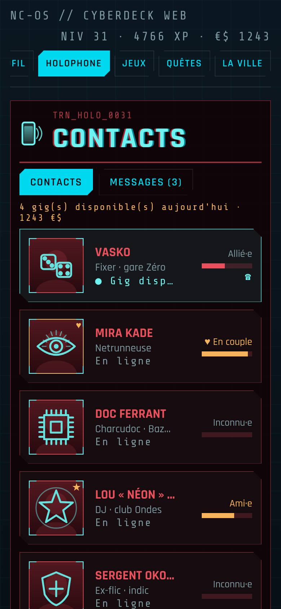
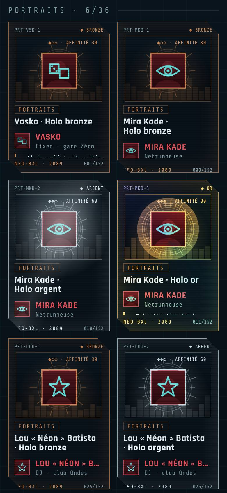

Un launcher Android complet au look cyberpunk, et un jeu de rôle qui vit au rythme de tes vraies journées : contacts, gigs, expéditions, une ville à explorer, des cartes holo à collectionner, et NEURA, l'IA qui veille sur toi.
⭳TÉLÉCHARGER L'APPLIAPK · DERNIÈRE VERSION · ANDROID 10+

Touche « Télécharger l'appli » depuis ton téléphone Android : le fichier APK se télécharge.
Ouvre le fichier. Android te demande d'autoriser l'installation depuis ton navigateur : accepte.
Ouvre Cyberdeck, puis choisis-le comme écran d'accueil quand Android te le propose.